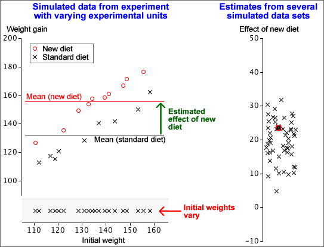
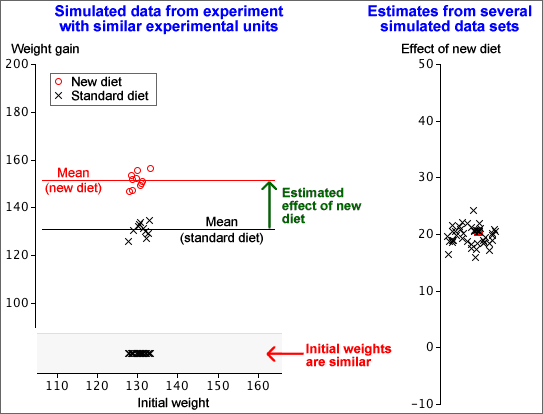

Aim of similar experimental units
In experiments, we usually try to use experimental units that are as similar as possible. Variability between experimental units increases the variability in resulting response measurements and this 'noise' in the data makes it harder to detect the effect of the experimental treatments.
In the simulation below, the units (animals) have varying initial weights, so the estimated effect of a new diet is varies considerably between repeats of the experiment.

In contrast, if the experimental units are similar, the effect of the new diet can be estimated much more accurately.
